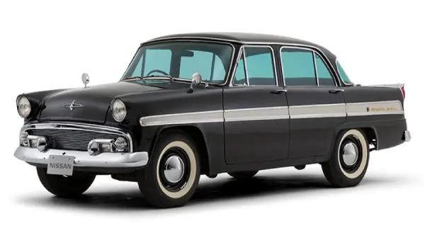
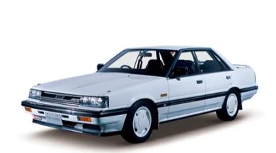
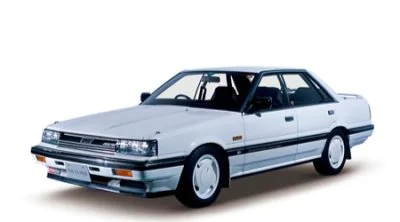
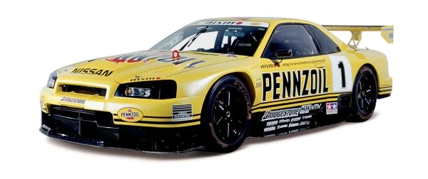
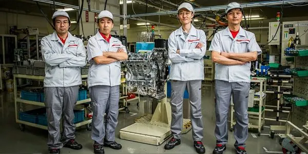
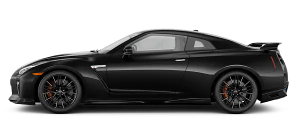
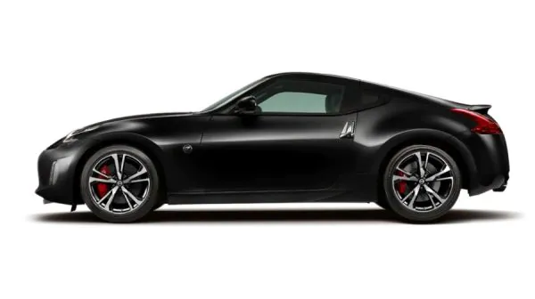

FROM SKYLINE TO GT-R®: THE EVOLUTION OF A
SUPERCAR
June 30, 2020
A BRIEF HISTORY OF THE SKYLINE
The legendary Skyline, first introduced in 1957, was originally built by Japan's Prince Motor Company. Production of the Prince Skyline lasted from 1957 until 1966, when Prince and Nissan merged. With humble origins as a rather modest 4-door luxury car, the Skyline began to evolve into a performance-bred sportscar following the merger. Today the Skyline is most recognized as the influential predecessor to the modern GT-R.
2021 NISSAN GT-R®
THE EVOLUTION OF A SUPER CAR
THE FIRST SKYLINE
The Nissan Skyline was originally produced by the Prince Motor Company in 1957, and then by Nissan (becoming the 'Nissan Skyline') after the two companies merged in 1966. The Skyline was available as either a four-door sedan or a five-door station wagon, and it featured a 1.5L GA-30 engine. It wasn't until 1964 that the first racing GT Skyline was introduced, still under the Prince Motors flag. The introduction of the GT Skyline marked the Skyline's shift from sedan to race car.
THE FIRST GENERATION NISSAN SKYLINE
Skyline finally became a Nissan in 1969, when the first performance-bred
Skyline GT-R was unveiled at the Tokyo Motor Show. It was still a sedan,
but it now boasted an inline six engine and (impressive for the day) 160
horsepower. The first generation Nissan Skyline was available from
1969-1972.
The 1969 GT-R version of the Skyline was a touring car like no
other. Taking cues from the Nissan Prince R380 racing prototype, it
relied on a four-valve Dual Overhead Cam engine for power and four-wheel
independent suspension for its remarkable handling. The car obliterated
the competition in Japan's domestic touring races, winning 52 races in
its first three years of competition.
The first two-door version
was introduced in 1970 with a successful launch and was well-received,
but a global gasoline crisis and a move towards stricter emissions
standards put the Skyline GT-R on the shelf for a time.
SKYLINE C110
R30 SKYLINE
R31 SKYLINE
From 1973 to 1977, the C110 generation Skyline was produced, known as the Kenmari thanks to the commercial with owners named Ken and Mary. It too had a GT-R version but only for 1973, which would make it the last GT-R branded Skyline until 1989.
The R30 was a successful and remarkably versatile design, available as a coupe, four-door sedan, five-door hatchback, and a four-door wagon. All told, the R30 was available in 26 variations, none of them really hinting at what the Skyline would one day become.
1986 saw the introduction of the R31. It was a little bigger and boxier than previous models, and was the first to get the famous "Red Top" Skyline FJ20 engine with red cam covers and the Nissan Induction Control System.
 

THE R32 SKYLINE GT-R
The Skyline had been through many phases, but it was in 1989 that the
real precursor to the GT-R of today was introduced. The R32 Skyline GT-R
had all-wheel drive and the famed Nissan RB26DETT inline six engine that
pumped out 280 horsepower. It still wasn't sold in America, but the JDM
(Japanese Domestic Market) model was and still is a legend in the
American tuner community.
A stripped-down version of the R32
entered the Japanese Touring Car Championship in 1989 and won every race
it started—29 in a row—over the next four seasons. It was then that the
legend of the GT-R was truly born.
R33 SKYLINE GT-R
After first appearing to the motoring world as a prototype at the Tokyo
Motor Show in 1993, the R33 Skyline GT-R was finally launched to the
public in January 1995 again with the famed RB26DETT.
In its
evolution from the R32, the R33 Skyline GT-R became a faster, more
stable car, thanks to highly improved body stiffness, better weight
distribution and optimized traction control provided by the new
all-wheel drive system called “ATTESA E-TS PRO”.
THE R34 SKYLINE GT-R
The R34 Skyline GT-R was introduced in 1998, and was available from 1998 to 2002. A technologically advanced display unit set the model apart, while it's RB26DETT twin-turbo I6 engine produced impressive horsepower. The shorter wheelbase and more streamlined body of the R34 helped it to achieve even higher performance than its predecessors.
THE FIRST NISSAN GT-R
In 2008, the GT-R officially landed on American roads. Nissan dropped the Skyline name and added a twin-turbo V6 that put out 473 horsepower, propelling the GT-R to performance levels that could not only compete with, but outclass legendary American muscle cars as well as German and Italian supercars. Overnight, the GT-R became a legend. Its technologically advanced road-grabbing all-wheel drive provided exhilarating handling, and it was all wrapped up in a sleek, yet muscular, modern exterior design.
Photo credits: Oubai Shoqar, Restauraciones Clasicas, Courtney Cutchen, Simmy Shandu, James Hutchinson, Unknown
2021 GT-R® ACCESSORIES
2020 NISSAN GT-R 50TH ANNIVERSARY
Making its debut at the 2019 New York International Auto Show, the 2020 Nissan GT-R 50th Anniversary Edition took the nameplate to a level that was unimaginable when it was first introduced 50 years ago. To celebrate the half-century of the GT-R, engineers challenged themselves to find undiscovered performance potential while still making sure the car could be enjoyed by drivers at any level.
2021 NISSAN GT-R T-SPEC SPECIAL EDITION
One year after its worldwide 50th anniversary celebration in 2020, the
legendaryNissan GT-Rreturned for 2021 with its high
performance and unparalleled refinement firmly on display.
The GT-R T-Spec stands apart as an instant collectible with exclusive
colors first seen on the Nissan Skyline GT-R R34. Also with gold-painted
NISMO forged wheels and wider front fenders to accommodate forged
20-inch wheels, this special edition proves to be a rare sight.
GT-R NISMO SPECIAL EDITION
In 2020, the car's engineers incorporated new turbochargers that now
help the GT-R Nismo produce 600-horsepower. The change also helped
increase the engine's low rpm response providing tighter clearances and
a 5% increase in efficiency. The result was even sharper engine response
in and out of corners, making the driving experience more rewarding and
richer than ever before.
The GT-R NISMO Special Edition proves that beauty is more than skin deep
with this unique carbon-fiber hood with clear paint. Inspired by the R34
Skyline GT-R V-spec II N1, it not only looks amazing, it saves precious
grams of weight. [*]
FROM SKYLINE TO GT-R: THE ENGINE
The first Skyline engine, introduced by the Prince Motor Company in
1957, was a 1.5-litre 4-cylinder power plant that produced 60
horsepower. Yes, 60 horsepower.
Fast-forward to 1988, when Nissan introduced a new RB26DETT engine
with the R32 Skyline GT-R. This powerful (at the time) 2.6-L twin-turbo
was capable of producing 280 PS (162 kW; 276 hp) and had 271 ln-ft of
torque.
Things have continued to change. Today, the GT-R's engine pumps
out nearly 600 horsepower - about 10X as much as the original Prince
engine. To understand what the modern Nissan GT-R is all about, you just
have to lift the hood. The engine you'll see is not a gas-guzzling
behemoth, but a remarkable piece of advanced technology generating power
from a 3.8-litre twin-turbo V6. When a GT-R is being built at our
facility in Yokohama, Japan, we don't let just anyone assemble the
engine.
THE TAKUMI
Just four men are trusted with the task of building the GT-R's engine, and they are called "The Takumi". Roughly translated, Takumi means "master craftsman" in English, and master craftsmen they most certainly are. Combined, they have more than a century of experience, and when they finish building, by hand, a GT-R engine, they literally put their name on their work. A special plaque is mounted on each engine, displaying the name of the man who built it.
THE GT-R IN POPULAR CULTURE
A car—a supercar—like the GT-R tends to draw a lot of attention, and over the years it has popped up in places other than the road. Several GT-R models have appeared in the ongoing video game series Need For Speed. Both the GT-R and Skyline are featured in the wildly popular Fast and Furious movie franchise. Dozens of different versions of the GT-R appear in the revolutionary driving simulator/game Gran Turismo as a virtual car, the response was so enthusiastic that a real concept car was built.
PRINCE SKYLINE 1500 DELUXE
PRINCE SKYLINE 2000GT
C10 SKYLINE 2000GT-R
C110 SKYLINE 2000GT-R
- TYPE: S50
- YEAR: 1965
- ENGINE: G1 (4-cyl. in line, OHV)
- POWER: 51kW (70PS)/4,800rpm
- TORQUE: 113Nm (11.5kgm)/3,600rpm
- TOP SPEED: 135km/h
- TYPE: S54B-2
- YEAR: 1965
- ENGINE: G7 (6-cyl. in line OHC with triple carb.) 1,988cc
- POWER: 92kW(125ps)/5,600rpm
- TORQUE: 167N·m(17.0kgf·m)/4,400rpm
- TOP SPEED: 180km/h
- TYPE: PGC10
- YEAR: 1969
- ENGINE: S20 (6-cyl. in line, 4-valve DOHC) 1,989cc
- POWER: 118kW (160PS)/7,000rpm
- TORQUE: 177Nm (18.0kgm)/5,600rpm
- TYPE: KPGC110
- YEAR: 1973
- ENGINE: S20 (6-cyl. in line 4-valve DOHC) 1,989cc
- POWER: 118kW (160ps)/7,000rpm
- TORQUE: 177Nm (18.0kgfm)/5,600rpm
R30 SKYLINE GT-R
R31 SKYLINE GT-R
R32 SKYLINE GT-R
R33 SKYLINE GT-R
- TYPE: KHR30
- YEAR: 1981
- ENGINE: L20ET (6-cyl. in line, OHC), 1,998cc
- POWER: 107kW (145PS)/5,600rpm
- TORQUE: 206Nm (21.0kgm)/3,200rpm
- TYPE: KRR31
- YEAR: 1986
- ENGINE: RB20DET (6-cyl. in-line, DOHC turbo), 1,998cc
- POWER: 140kW (190PS)/6,400rpm
- TORQUE: 240Nm (24.5kgm)/4,800rpm
- TYPE: BNR32
- YEAR: 1990
- ENGINE: RB26DETT (6-cyl. in line, DOHC), 2,568cc
- POWER: 405kW (550PS)/7,600rpm
- TORQUE: 490Nm (50kgm)/6,000rpm
- TYPE: BCNR33
- YEAR: 1995
- ENGINE: RB26DETT (6-cyl. in line, DOHC), 2,568cc
- POWER: 224kW (305PS)/6,500rpm
- TORQUE: 373Nm (38.0kgm)/4,500rpm
R34 SKYLINE GT-R
R35 NISSAN GT-R
NISSAN GT-R BOLT SPECIAL
- TYPE: BNR34
- YEAR: 1999
- ENGINE: RB26DETT (6-cyl. in line, DOHC), 2,708cc
- POWER: 386kW (500PS) /6,000rpm
- TORQUE: Over 706Nm (72.0kgm)/4,400rpm
- TYPE: R35
- YEAR: 2007
- ENGINE: VR38DETT (V6, 4-valve DOHC with twin turbo) 3,799cc
- POWER: 353kW(480ps)/6,400rpm
- TORQUE: 588N·m(60.0kgm)/3,200-5,200rpm
- TYPE: R35
- YEAR: 2012
- ENGINE: VR38DETT (V6, 4-valve DOHC with twin turbo) 3,799cc
- POWER: 405kw(550ps)/6400rpm
- TORQUE: 632N·m(64.5kgm)/3200-5800rpm
FEATURED VEHICLES
2021 NISSAN GT-R®
Question everything. Get better answers. GT-R rewrites the laws of sports car aerodynamics, redefines supercar performance, and gives you 4-season thrills. 4 seats, and a handcrafted interior. Mid-engine exotics, you've been warned. This is tech that breaks rules and shatters records. This is tech that moves.
2020 NISSAN 370Z®
From the battle cry of a legendary 332-hp, VQ V6, to the world's-first available rev-matching manual transmission. The relentless cornering grip of a dynamically balanced chassis talking to you through a driver-focused cockpit. But it's more than just carbon fiber composite and 19" forged alloy wheels - it has soul. The 2020 Nissan 370Z. Pure exhilaration from A to Z, this is tech that moves.
SHARE

RELATED ARTICLES
LIFESTYLE
TECHNOLOGY
TECHNOLOGY
CAR CLEANING TIPS TO
REDUCE THE RISK OF
CORONAVIRUS IN YOUR
CAR [*]
THE CONFIDENCE OF NISSAN
SAFETY TECHNOLOGY
AWD VS. 4WD VS. 2WD, OH MY!
WANT TO STAY IN TOUCH?
Follow us or sign up for the latest news and offers.
Nissan USA >Nissan Blog >Skyline to GT-R
- Get Started
- Build Your Nissan
- Search Inventory
- Locate a Dealer
- View a Brochure
- Estimate Payments
- Compare Competitors
- Get Internet Quote
- Estimate Credit Score
- Get Trade-in Value
NISSAN AT HOME
- Owner Portal
- Manuals & Guides
- Manuals & Guides
- NissanConnect
- Nissan Service
- Nissan Navigation Store
- Collision Assistance
- Nissan Finance Portal
- Snug Kids
- Nissan Visa Credit Card
OWNING
- About Nissan
- News & Events
- Nissan Rental Car Program
- Nissan Intelligent Mobility
- Certified Pre-Owned
- Local Nissan Offers
- Accessibility
ABOUT
- Overview
- Business Vehicles
- Fleet
- Offers & Financing
- Program Benefits
- Upfit & Accessories
- For Dealers
BUSINESS & FLEET
SOCIAL
Home
Site Map
Contact Us
Do Not Sell My Personal Information
Legal
Privacy Policy
© Nissan 2022